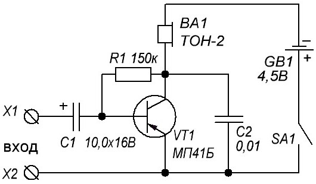

Усилитель низкой частоты

Рис. 1 - Схема простого усилителя низкой частоты
Таблица 1
| Обозначение | Наименование | Номинал | Количество |
|---|---|---|---|
| VT1 | Биполярный транзистор | МП41, МП41Б | 1 |
| C1 | Электролитический конденсатор | 10 мкФ, 16 В | 1 |
| C2 | Конденсатор | 0,01 мкФ | 1 |
| R1 | Резистор | 150 кОм | 1 |
| BA1 | Наушники | ТОН-2 (можно другие высокоомные | 1 |
| GB1 | Батарейка | 4,5 В | 1 |
| SA1 | Выключатель | любой миниатюрный | 1 |
Чтобы правильно спаять этот усилитель надо:
- Вырезать подходящий кусок картона (стеклотекстолит, гетинакс).
- Нарисовать на нем эту схему.
- Проделать отверстия в картоне под выводы элементов.
- Залудить выводы радиодеталей.
- Вставить радиодетали в отверстия на картоне.
- Загнуть выводы радиодеталей с другой стороны картона и совместить их друг с другом по схеме.
- Спаять выводы вместе.
Включаем усилитель и в наушниках должны услышать равномерный шум. Если тишина, то проверьте правильно ли поставлен транзистор, батарейка, электролитический конденсатор, хорошо ли спаяны выводы и нет ли где замыкания. Если все правильно, а схема все равно не работает, то позамыкайте вход усилителя, ты должен услышать щелчки.